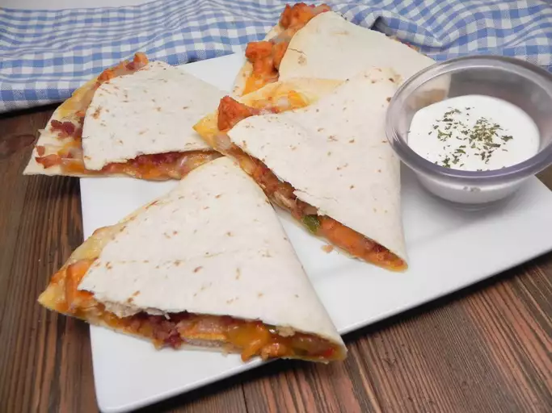

Chicken Wing Recipe

Description
The chicken quesadilla is a recipe great for lovers of zesty chicken. Total cook time will be 20 minutes.
Including prep times of about ~20 minutes, cook time of ~25 minutes.
- 1 pound of skinless, boneless chicken breast, diced
- 1 (1.27 oz) packet fajita seasoning
- 1 tbsp vegetable oil
- 2 green bell peppers, chopped
- 2 red bell peppers, chopped
- 1 onion, chopped
- 10 (10 in) flour tortillas
- 1 (8 oz) package shredded Cheddar cheese
- 1 (8 oz) package shredded Monterey Jack cheese
- 1 tbsp bacon bits
Steps